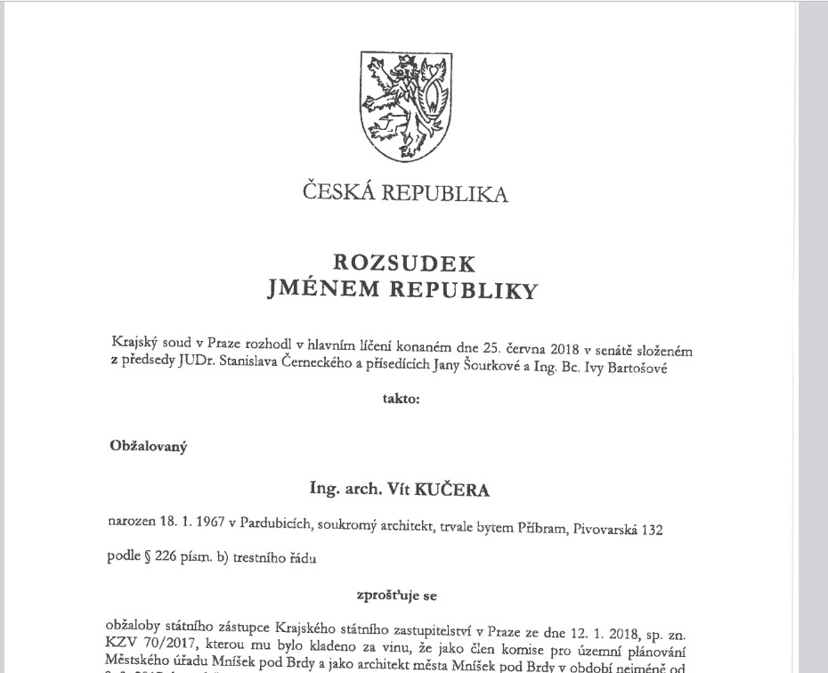

Ing. arch. Vít Kučera – bývalý městský architekt Mníšku pod Brdy
V souvislosti s medializovanou kauzou, která zasáhla nejen mé osobní, ale i profesní jméno, považuji za nutné se veřejně vyjádřit. Věci, které byly šířeny v médiích a na sociálních sítích, měly vážný dopad na mou pověst, ačkoliv jsem byl pravomocně osvobozen.
Soud ve svém rozsudku jednoznačně konstatoval, že se skutek, z něhož jsem byl obviňován, nestal.
Žijeme v době, kdy je snadné poškodit jméno člověka – často stačí jedno obvinění, sdílení a veřejný soud v komentářích. Očistit se je proces náročný, a i když skončí vítězstvím, škody přetrvávají. Toto prohlášení má být krokem k obnovení důvěry a důstojnosti, kterou si jako člověk i architekt, doufám, zasloužím.
Nadále se věnuji své práci s plným nasazením a profesionálním přístupem. Děkuji těm, kteří zachovali důvěru a nenechali se unést dojmy bez důkazů.
Proto činím toto stručné prohlášení veřejně dostupným.
Náhled titulní stránky rozsudku:
Rozsudek je k nahlédnutí na vyžádání. Tento výřez slouží pouze jako důkaz autenticity.